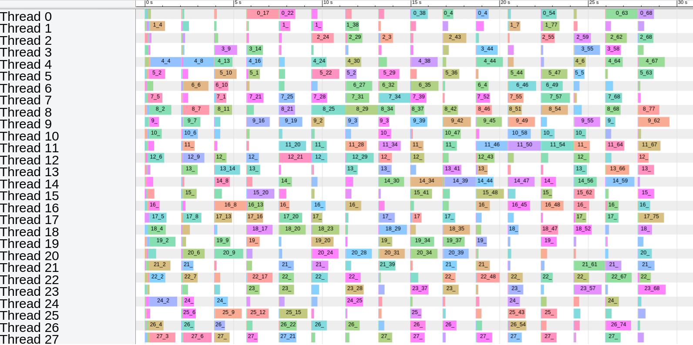

Taskflow
Modern C++ Parallel Task Programming
Presented by Tsung-Wei Huang
How can we make it easier for C++ developers to quickly write efficient parallel programs?
Want Parallel Code
- Simple
- Expressive
- Transparent
- Performant
- Productive
It's NOT Easy Though ...
- Task Dependencies
- Data Race
- Concurrency Controls
- Thread Contention
- Debugging
- ...
A Homegrown Example

C++ Thread
std::atomic_int garnish_ready{0}; // dependency variable
std::atomic_int meat_ready{0}; // dependency variable
std::atomic_int plating_ready{0}; // dependency variable
std::thread cook1 ([&] () {
garnish = cook_garnish(); garnish_ready = 1;
});
std::thread cook2 ([&] () {
meat = cook_meat(); meat_ready = 1;
});
std::thread chief ([&] () {
while(!garnish_ready && !meat_ready); // spinning
plates = plating(garnish, meat); plating_ready = 1;
});
std::thread waiter1 ([&] () {
while(!plating_ready); serve(plates[0]); // spinning
});
std::thread waiter2 ([&] () {
while(!plating_ready); serve(plates[1]); // spinning
});
OpenMP
#pragma omp parallel
{
#pragma omp single
{
int c1c, c2c, cw1, cw2;
#pragma omp task depend(out:c1c)
garnish = cook_garnish();
#pragma omp task depend(out:c2c)
meat = cook_meat();
#pragma omp task depend(in:c1c,c2c) depend(out:cw1,cw2)
plates = plating(garnish, meat);
#pragma omp task depend(in:cw1)
serve(plates[0]);
#pragma omp task depend(in:cw2)
serve(plates[1]);
}
}
Intel TBB
using namespace tbb::flow;
task_scheduler_init init(default_num_threads());
graph g;
continue_node<continue_msg> cook1(g, [&] (auto) { garnish = cook_garnish(); });
continue_node<continue_msg> cook2(g, [&] (auto) { meat = cook_meat(); });
continue_node<continue_msg> chief(g, [&] (auto) { plates = plating(garnish, meat); });
continue_node<continue_msg> waiter1(g, [&] (auto) { serve(plates[0]); });
continue_node<continue_msg> waiter2(g, [&] (auto) { serve(plates[1]); });
make_edge(cook1, chief);
make_edge(cook2, chief);
make_edge(chief, waiter1);
make_edge(chief, waiter2);
cook1.try_put(continue_msg()); // start at cook1
cook2.try_put(continue_msg()); // start at cook2
g.wait_for_all();
Taskflow
tf::Taskflow executor;
tf::Taskflow taskflow;
auto [cook1, cook2, chief, waiter1, waiter2] =
taskflow.emplace(
[&] () { garnish = cook_garnish(); },
[&] () { meat = cook_meat(); },
[&] () { plates = plating(garnish, meat); },
[&] () { serve(plates[0]); },
[&] () { serve(plates[1]); }
);
cook1.precede(chief); // cook1 runs before chief
cook2.precede(chief); // cook2 runs before chief
chief.precede(waiter1); // chief runs before waiter1
chief.precede(waiter2); // chief runs before waiter2
executor.run(tf);
Taskflow is FREE
- from explicit thread management
- from difficult lock mechanism
- from daunting class declaration
Development Cost
SLOCCount ReportWhat about Performance?
Graph Algorithm
Runtime Comparison between OpenMP, Intel TBB, and TaskflowMatrix Operation
Runtime Comparison between OpenMP, Intel TBB, and TaskflowReal Gain is Tremendous
VLSI Timing Analysis
Dev Cost between OpenTimer v1 (OpenMP) and v2 (Taskflow)Runtime Performance
OpenTimer v1 (OpenMP) and v2 (Taskflow)Parallel Scaling Performance
OpenTimer v2 (Taskflow) Runtime across Increasing Numbers of CoresDynamic Tasking
tf::Taskflow tf;
auto A = tf.emplace([](){}).name("A");
auto C = tf.emplace([](){}).name("C");
auto D = tf.emplace([](){}).name("D");
auto B = tf.emplace([] (auto& subflow) {
auto B0 = subflow.emplace([](){}).name("B0");
auto B1 = subflow.emplace([](){}).name("B1");
auto B2 = subflow.emplace([](){}).name("B2");
auto B3 = subflow.emplace([](){}).name("B3");
auto B4 = subflow.emplace([](){}).name("B4");
B0.precede(B1, B2, B3);
B4.succeed(B1, B2, B3);
}).name("B");
A.precede(B); // B runs after A
A.precede(C); // C runs after A
B.precede(D); // D runs after B
C.precede(D); // D runs after C
Conditional Tasking
tf::Taskflow tf;
auto A = tf.emplace([](){}).name("A");
auto B = tf.emplace([](){}).name("B");
auto C = tf.emplace([](){}).name("C");
auto D = tf.emplace([](){}).name("D");
auto E = tf.emplace([](){ return rand()%3; }).name("E");
auto F = tf.emplace([](){}).name("F");
A.precede(B, C); // A runs before B and C
B.precede(D); // B runs before D
C.precede(F); // C runs before F
D.precede(B); // D conditions B on 0 (feedback)
D.precede(D); // D conditions D on 1 (self-loop)
D.precede(E); // D conditions E on 2

Composability
tf::Taskflow A, B;
auto [taskA1, taskA2, taskA3] = A.emplace(
[]() { std::cout << "Task A1\n"; },
[]() { std::cout << "Task A2\n"; },
[]() { std::cout << "Task A3\n"; }
);
taskA1.precede(taskA2, taskA3);
auto [taskB1, taskB2, taskB3] = B.emplace(
[]() { std::cout << "Task B1\n"; },
[]() { std::cout << "Task B2\n"; },
[]() { std::cout << "Task B3\n"; }
);
// Compose taskflow B
auto module_A = B.composed_of(A);
taskB1.precede(module_A);
module_A.precede(taskB2, taskB3);

Concurrent CPU-GPU Tasking
tf::Taskflow taskflow;
tf::Executor executor;
auto allocate_x = taskflow.emplace(
[&](){ cudaMalloc(&dx, N*sizeof(float));}
);
auto allocate_y = taskflow.emplace(
[&](){ cudaMalloc(&dy, N*sizeof(float));}
);
auto cudaflow = taskflow.emplace([&](tf::cudaFlow& cf) {
auto h2d_x = cf.copy(dx, hx.data(), N);
auto h2d_y = cf.copy(dy, hy.data(), N);
auto d2h_x = cf.copy(hx.data(), dx, N);
auto d2h_y = cf.copy(hy.data(), dy, N);
auto op = cf.kernel(N/256, 256, 0, saxpy, N, 2, dx, dy);
op.succeed(h2d_x, h2d_y).precede(d2h_x, d2h_y);
});
cudaflow.succeed(allocate_x, allocate_y);
executor.run(taskflow).wait();

Monitor Thread Activities
tf::Taskflow taskflow;
auto observer = executor.make_observer<tf::ExecutorObserver>();
auto [taskA1, taskA2, taskA3] = taskflow.emplace(
[]() { std::cout << "Task A1\n"; },
[]() { std::cout << "Task A2\n"; },
[]() { std::cout << "Task A3\n"; }
);
taskA1.precede(taskA2, taskA3);
taskflow.run_n(A, 10).get();
// Dump thread activities to chrome://tracing
observer.dump(std::cout);
chrome://tracing
Drop-in Integration
# clone the newest Taskflow
~$ git clone https://github.com/taskflow/taskflow.git
# Taskflow is header-only
~$ cp -r taskflow/taskflow my_project/
# compile you code with g++, clang++, or msvc
~$ g++ -std=c++17 my_project/test.cpp -pthread
We ♥ Feedback
Taskflow is the cleanest Task API I've ever seen.
Taskflow has a very simple and elegant tasking interface. The performance also scales very well.
Best Poster Award in the official CPP Conference, 2018
Second Prize of Open Source Software Competition in ACM Multimedia Conference, 2019
Acknowledgment
- Development Team
- Contributors
- Sponsors (NSF, DARPA)
- ... and all users!